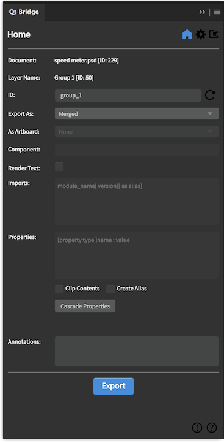
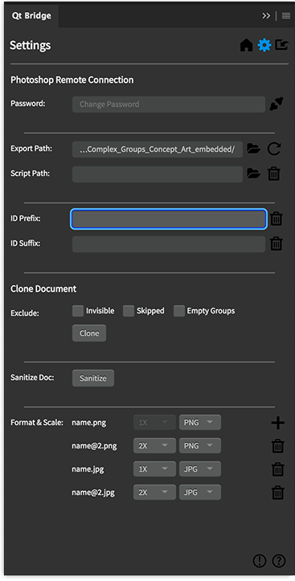
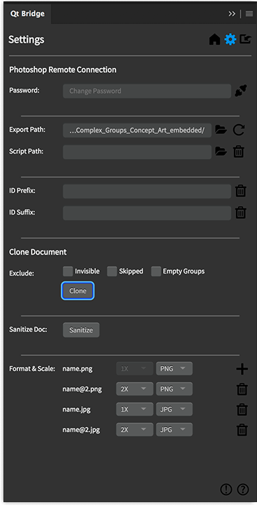
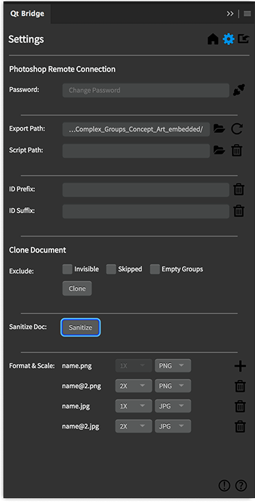
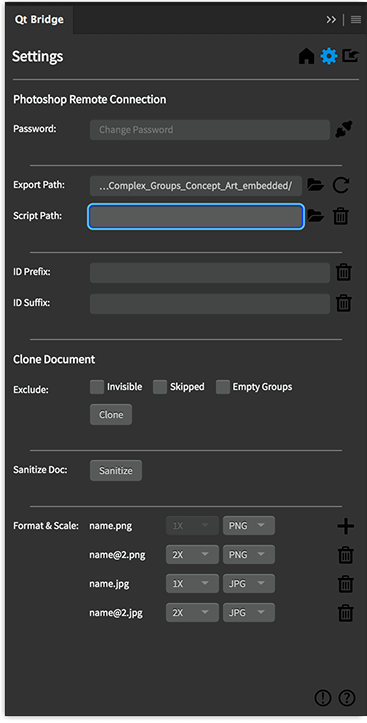
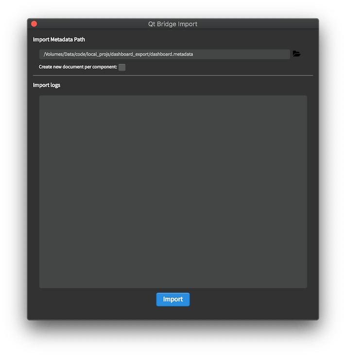
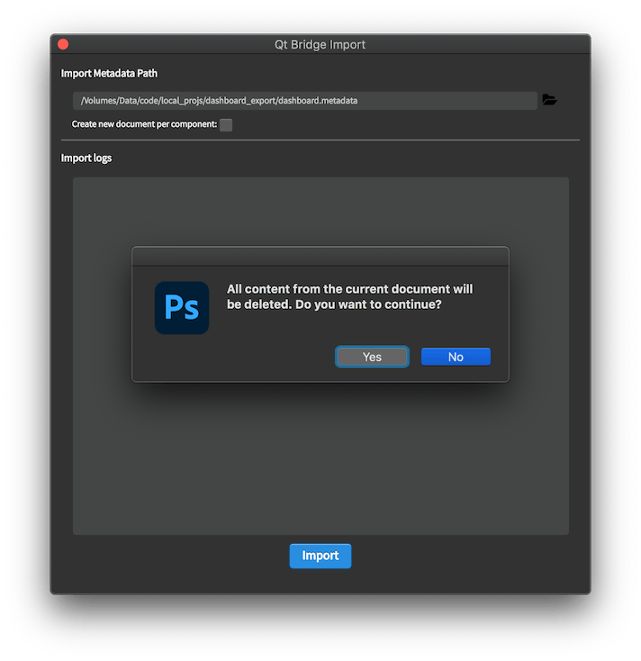

Using Qt Bridge for Adobe Photoshop
Organizing Assets
To get the best results when you use Qt Bridge for Adobe Photoshop to export designs from Adobe Photoshop for importing them to Qt Design Studio, follow these guidelines when working with Photoshop:
- Arrange your art into artboards and organize it into groups and layers that are imported into Qt Design Studio as separate files, depending on the choices you make when exporting designs.
- Use the Type tool to make sure that all of your text labels are exported to Text items.
- Store all assets in vector format to be able to easily rescale them for different screen sizes and resolutions.
To use the fonts that you use in Photoshop also in Qt Design Studio, you need to load them to Qt Design Studio. Qt Design Studio deploys them to devices when you preview the UI. For more information, see Using Custom Fonts.
Note: You can export only files that are saved in the Photoshop file format, such as .psd and .psb. For all other document formats, Qt Design Studio displays the following error message: Document is not supported.
Items You Can Export
You can export the following parts of your design using Qt Bridge for Adobe Photoshop:
- Layers
- Text layers
- Groups
- Artboards
You cannot export the following parts of your design:
- Smart Objects
- Frames
Using Artboards
The relationships between the groups and layers on an artboard are preserved when you export designs from Adobe Photoshop and import them into Qt Design Studio.
When you use Qt Bridge for Adobe Photoshop to export your designs, you will determine how you want each group or layer exported: as a component or child. A component will be imported as a single UI file that can contain other assets. A child will be imported as a single image file that you can use within UI files.
If you plan to use pieces of your design as separate images in the UI, group them on an artboard as separate layers. You can then export the group as a component and each layer within it as a child. The children are imported to Qt Design Studio as separate PNG files that you can use as image sources.
To use the contents of an artboard as a single image in the UI, you can merge the groups and layers when you export them. During import, the contents are flattened into one PNG file. The merge is done in a way that enables you to change the groups and layers in Photoshop or Adobe Illustrator and then export and import the artboard again. This is an easy way to create a reference image of how the final UI should look like, for example.
Place different parts of the UI, such as menus and pop-ups, on separate artboards to be able to export them as components or children and to import them as code and PNG files that you can drag and drop to the 2D view in Qt Design Studio Design mode while creating a UI.
Qt Design Studio offers predefined sets of UI controls that you can modify according to your needs. You can export your own controls as components, Qt Quick Controls, or Qt Quick Studio Components. The position and dimensions of your control are preserved.
However, if you want your UI controls, such as check boxes, to look exactly like they do in Photoshop, you have to create the control in an Artboard and use the artboard in the layers where the control instance is to be created. Qt Bridge imports the control as a custom component that you can program in Qt Design Studio.
Exporting Assets
Each artboard is exported automatically as a component, which means that it will be imported as a separate file that contains all the artwork on the artboard, except layers that are set to be skipped or exported as child items. You determine how each group or layer in an artboard is exported: as a component or a child item. In addition, you can merge the groups and layers of an artboard into the parent as one item or skip layers completely.
By default, layers are exported as follows:
- First level group layers are exported as child items of the artboard.
- Second level group layers are merged to their parent.
- Asset layers are exported as merged.
- Text layers are always exported as child items.
- Images are exported in PNG or JPG format, depending on your selection.
Qt Bridge for Adobe Photoshop automatically proposes identifiers (IDs) for all groups and layers. The IDs will be used as filenames in Qt Design Studio. You can change the IDs, so that you can easily find them in Qt Design Studio. Just keep in mind that the IDs must be unique and that they must follow some naming conventions.
You can export assets using the default settings and make all the changes later in Qt Design Studio. If you are familiar with the QML syntax, you can modify the settings to tailor the generated code to a certain degree. For example, you can specify the component or Qt Quick Studio Component to use for a artboard or layer. If you have drawn an arc that you mean to animate, you can export it as an Arc Studio component to avoid having to replace the arc image with an Arc component in Qt Design Studio. Or you could export a button as a Qt Quick Controls Button type.
You can specify effects, such as a blur effect, to use for a group or layer.
The QML types supported by Qt Design Studio are listed in the Components view in the Design mode of Qt Design Studio.
You can also specify values for the properties of the component or create property aliases to fetch the values from other properties.

Specifying Settings for Exporting Assets
To export your design using Qt Bridge for Adobe Photoshop:
- Qt Bridge for Adobe Photoshop automatically proposes identifiers for all groups and layers that you can change in the ID field. The IDs must be unique, they must begin with a lower-case letter or an underscore, and they can only contain letters, numbers, and underscore characters. For more information, see The id Attribute.
- In the Export As field, select the export type for the group or layer:
- Component exports the selected artboard, group, or layer with metadata. The exported data can be used later to import the component as a separate UI file that contains all the artwork in it, except layers that are set to be skipped or exported as child items.
- Child exports each asset of the selected group or layer as a separate PNG file, with references to the images in the component file.
- Merged merges the selected groups and layers into the parent as one item.
- Skipped completely skips the selected layer.
- In the As Artboard field, select an artboard to reuse. For example, you can use an artboard to define a component, such as a button, and reuse it in other artboards.
- In the Component field, specify the component or Studio component to morph this layer into. The component that is generated during import will be of this type. For example, if you drew a rectangle, you can export it as a Rectangle Studio component. You can provide the import statement of the module where the component type is defined in the Imports field.
Note: The implicit properties except position and size are not applied when the Component is defined. For example, all text properties will be ignored if Component is defined for a text layer, but explicit properties defined in the Properties field will be applied.
- Select the Render Text check box to render the text layer as an asset. The layer will be exported as an asset and the text data will not be exported. This allows the text layer to be merged to parent artboard or group as well.
- In the Add Imports field, enter additional import statements to have them added to the generated UI file. For example, to use Qt Quick Controls 2.3, you need the import statement
QtQuick.Controls 2.3and to use Qt Studio Components 1.0, you need the import statementQtQuick.Studio.Components 1.0. You can also import a module as an alias. - In the Properties field, specify new properties or assign values to the existing properties of the component. You can also add and modify properties in Qt Design Studio. The following are a few examples of the properties:
property int counter: 5 property string label: "ok" antialiasing : true width: parent.width / 2
To remove a property, write a "dash" (-) followed by the "property name". For example:
- widthwill remove the property width from the generated code.
- Select the Clip Contents check box to enable clipping in the type generated from the layer. The generated type will clip its own painting, as well as the painting of its children, to its bounding rectangle.
- Select the Create Alias check box to export the item generated from this layer as an alias in the parent component.
- Select Cascade properties to apply the current set of properties to all the children of the selected layer.
- In the Annotations field, specify annotation for the component. See Annotating Designs.
- Select Export to copy your assets to the export path you specified.
- When the exporting is done, select OK.
All the assets and metadata are copied to the directory you specified. This might take a little while depending on the complexity of your project.
You can now create a project in Qt Design Studio and import the assets to it, as described in Creating Projects and Importing Designs.
Note: Exporting your design using Qt Bridge for Adobe Photoshop can be slow for documents with large number of layers. Closing Photoshop's Info, Layers, and Properties windows can improve the time it takes to export.
Customizing IDs
Qt Bridge for Adobe Photoshop enables customizing auto generated IDs. In the ID Prefix field, specify an ID prefix that will be prepended to all auto generated IDs. In the ID Suffix field, specify an ID suffix that will be appended to all auto generated IDs.

Cloning Documents
Qt Bridge for Adobe Photoshop enables creating a clone of the current document. The clone workflow allows the user to filter out certain kind of layers and groups. In the Qt Bridge for Adobe Photoshop Settings dialog, select Clone to start cloning the document.

Clone Options
The following exclusion options can be selected to exclude certain kind of layers and groups in the cloned document:
- Invisible: Select this option to exclude the invisible layers and groups.
- Skipped: Select this option to exclude the layers where the Export As field value is set to Skipped.
- Empty Groups: Select this option to exclude any empty groups. This also applies to groups which will eventually become empty because of the other selected exclusion options.
Sanitizing Documents
Qt Bridge for Adobe Photoshop enables removing all Qt Bridge for Adobe Photoshop related metadata from the active document. In the Qt Bridge for Adobe Photoshop Settings dialog, select Sanitize Document to sanitize the active document. Once the sanitization is successfully done, the document will contain no Qt Bridge for Adobe Photoshop related metadata and the Qt Bridge for Adobe Photoshop layer settings will fall back to the default values.
Note: The sanitization is done in memory and the document must be saved to keep the sanitized state.

Extending Qt Bridge for Adobe Photoshop
You can change the default behavior of Qt Bridge for Adobe Photoshop with the help of a JSX script. One can write specific functions in the script that are called by Qt Bridge for Adobe Photoshop with useful parameters.
Overridable JSX Functions
You can define the following functions in the override JSX.
- preExport(document) This function is called before the document is exported. The parameter document is the PSD Document instance. This function can be used to make temporary changes in the document before export.
- postExport(document) This function is called after the document is exported. The parameter document is the PSD Document instance. You can undo the temporary changes done in the function preExport(...).
- customDefaultQmlId(name, instance) The function is called for setting the default ID of the layer. The returned value is used for the ID. Return
falseto use the auto generated ID instead. The parameter name is the auto generated ID by the plugin and instance is the PSD layer instance.
Note: Please refer to Adobe Photoshop CC Javascript scripting guide to understand the object model and Document and Layer instances.

In the Qt Bridge for Adobe Photoshop Settings dialog, select Override JSX Script to set the override JSX script.
Importing Metadata & Assets
Qt Bridge for Adobe Photoshop can import metadata generated from other tools and generate a Photoshop document. A conventional workflow would be to generate metadata and assets by exporting a QML project from Qt Design Studio and use Qt Bridge for Adobe Photoshop to generate a Photoshop document.
Imported text and the assets are organized into Artboards, layers, and groups.
Select the Import button to launch the Import panel. Alternatively, Qt Bridge import can be launched from Window > Extensions.

Create a new PSD document and launch the Import dialog. Open the metadata file to import and select Import.
Note: The import process removes all the existing layers in the selected PSD document.

The following guidelines are followed to generate the Photoshop document:
- An Artboard is created for each component exported and defined in the metadata file.
- An image layer is created for an item with an asset.
- A solid fill layer is created for an item without an asset.
- A paragraph text layer is created for Text items.
All metadata specified in the metadata file is assigned to the generated layers.
An important concept of Virtual parent is applied to translate the QML DOM to Photoshop DOM. A QML Item can have children but a layer in a Photoshop document cannot have child layers. To mitigate this variance, a Group layer is created and child items are added to this Group layer. The Group layer acts as a virtual parent and the correct parent is assigned when the Photoshop document is exported and re-imported in Qt Design Studio.
Note: The parent-child relationship may be lost if the virtual parent Group layer is moved or deleted.